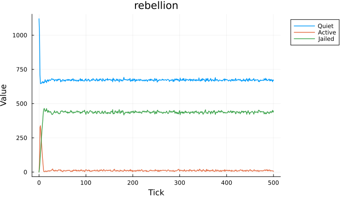
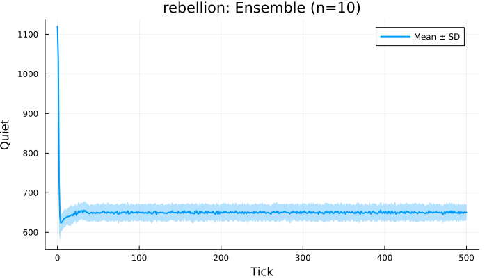
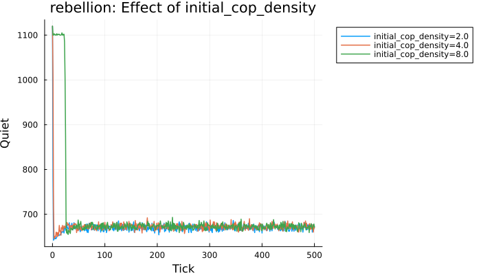

Rebellion
Overview
WHAT IS IT?
This project models the rebellion of a subjugated population against a central authority. It is is an adaptation of Joshua Epstein’s model of civil violence (2002).
The population wanders around randomly. If their level of grievance against the central authority is high enough, and their perception of the risks involved is low enough, they openly rebel. A separate population of police officers (“cops”), acting on behalf of the central authority, seeks to suppress the rebellion. The cops wander around randomly and arrest people who are actively rebelling.
HOW IT WORKS
Each “agent,” or member of the general population, has an individual level of grievance toward the central authority. GRIEVANCE is based on the agent’s PERCEIVED-HARDSHIP, which is assigned randomly at startup, and on GOVERNMENT-LEGITIMACY, which is global across agents and specified by a slider in the interface.
Each agent also calculates an individual risk of rebelling at the beginning of each turn. This ESTIMATED-ARREST-PROBABILITY, is based on the number of cops and already rebelling agents within VISION patches, namely 1 - exp (- k * (C/A)<sub>v</sub>) — where (C/A)<sub>v</sub> is the ratio of cops to active agents, and k is a constant set in “startup” to ensure a reasonable value when there is only one cop and one agent within a particular field of vision. In our implementation, we changed one aspect of Epstein’s description. After dividing by C by A, we take the “floor” of the result (that is, round downwards to an integer). Without this change, the model does not exhibit punctuated equilibrium. The effect of the change is that if there are more rebels than cops in the neighborhood, the probability of arrest is zero, otherwise it is very nearly 1.0. In other words, the rule could be written more simply as:
ifelse a > c [ report 0 ] [ report 0.99 ]An agent’s NET-RISK is the product of the calculated ESTIMATED-ARREST-PROBABILITY and RISK-AVERSION randomly set for each agent at birth.
The model cycles through three different rules, known as M (move), A (agents) and C (cops):
Movement rule M says that each cop and non-imprisoned agent moves to a random unoccupied site within VISION patches.
Agent rule A says that if an agent’s GRIEVANCE exceeds the NET-RISK by a small threshold (set by default to 0.1 in “setup”), the agent decides to rebel. This is noted by changing the agent’s border color from blue to red. (It is also possible for the agent to move from rebellion to quiet, in which case the border color changes from red to blue.)
Cop rule C says that each cop should look for active agents within VISION patches. If at least one exists, the cop randomly selects one active agent and sends it to jail for a number of turns between 0 and MAX-JAIL-TERM (settable by a slider in the interface) and moves to the patch of the jailed agent. The patch of the jailed agent is considered unoccupied.
THINGS TO NOTICE
Watch how agents exhibit deceptive behavior by changing their public state when cops are present, despite a constant level of private grievance. To see this press the WATCH ONE button, slow down the model, switch to the 3D view and zoom in on the selected agent. It may be easier to see this phenomenon if you change the sliders, especially reducing the VISION.
Watch the plot of active agents. Notice that it exhibits “punctuated equilibrium” — periods of quiescence followed by periods of rebellion.
THINGS TO TRY
Epstein claims that movement of the agents causes more frequent episodes of rebellion. Run the model with the MOVEMENT? switch on and off to see if you get this result.
Compare the effects of a gradual erosion in the perceived legitimacy of the central authority to a smaller, but immediate drop. For example, set GOVERNMENT-LEGITIMACY to 0.9 and reduce it to zero over 250 runs, plotting the legitimacy and the number of active agents. Now do another run, beginning with legitimacy at 0.9. This time, leave the legitimacy constant for 80 runs and then drop it to 0.7 at once. Observe the results. Try to explain them. Think of historical examples of this phenomena. What are the implications of this result for the strategy of revolutionary leaders?
Epstein quotes de Tocqueville: “It is not always when things are going from bad to worse that revolutions break out. On the contrary, it oftener happens that when a people that has put up with oppressive rule over a long period without protest suddenly finds the government relaxing its pressure, it takes up arms against it.” Test de Tocqueville’s observation in the model by comparing the effects of a gradual erosion in perceived legitimacy with a gradual erosion in the number of cops. Observe the results. Explain the difference.
EXTENDING THE MODEL
Write a reporter procedure that reports true when there is a rebellion, false during quiescent periods.
Measure the intervals between episodes of rebellion. What is the distribution of these waiting times?
Try changing some of Epstein’s assumptions as below. Do these changes create qualitative differences in results?
Change GOVERNMENT-LEGITIMACY such that it increases proportionally with the number of nearby jailed agents.
Change the model such that each agent’s grievance is influenced by the value of other nearby agents.
NETLOGO FEATURES
Note the use of a patch variable to store precomputed neighborhood agentsets. This improves performance because the neighborhoods don’t have to be calculated over and over again.
CREDITS AND REFERENCES
This model, and the preceding explanation, is adapted from Joshua M. Epstein, “Modeling civil violence: An agent-based computational approach”, Proceedings of the National Academy of Sciences, Vol. 99, Suppl. 3, May 14, 2002, and is available at https://www.ncbi.nlm.nih.gov/pmc/articles/PMC128592/.
HOW TO CITE
If you mention this model or the NetLogo software in a publication, we ask that you include the citations below.
For the model itself:
- Wilensky, U. (2004). NetLogo Rebellion model. http://ccl.northwestern.edu/netlogo/models/Rebellion. Center for Connected Learning and Computer-Based Modeling, Northwestern University, Evanston, IL.
Please cite the NetLogo software as:
- Wilensky, U. (1999). NetLogo. http://ccl.northwestern.edu/netlogo/. Center for Connected Learning and Computer-Based Modeling, Northwestern University, Evanston, IL.
COPYRIGHT AND LICENSE
Copyright 2004 Uri Wilensky.

This model is licensed under the Creative Commons Attribution-NonCommercial-ShareAlike 3.0 License. To view a copy of this license, visit https://creativecommons.org/licenses/by-nc-sa/3.0/ or send a letter to Creative Commons, 559 Nathan Abbott Way, Stanford, California 94305, USA.
NetLogo itself is free software for non-commercial use under the terms of the GNU General Public License (see full license information here).
To inquire about commercial licenses for either NetLogo or specific models from the models library, please contact netlogo-commercial-admin@ccl.northwestern.edu.
This model was created as part of the projects: PARTICIPATORY SIMULATIONS: NETWORK-BASED DESIGN FOR SYSTEMS LEARNING IN CLASSROOMS and/or INTEGRATED SIMULATION AND MODELING ENVIRONMENT. The project gratefully acknowledges the support of the National Science Foundation (REPP & ROLE programs) – grant numbers REC #9814682 and REC-0126227.
Parameters
| Parameter | Type | Default | Description |
|---|---|---|---|
grid_width | Int | 40 | NetLogo: 0-39 |
grid_height | Int | 40 | grid height |
initial_cop_density | Float64 | 4.0 | percent |
initial_agent_density | Float64 | 70.0 | percent |
government_legitimacy | Float64 | 0.82 | government legitimacy |
max_jail_term | Int | 30 | max jail term |
vision | Float64 | 7.0 | vision |
movement | Bool | true | movement |
k | Float64 | 2.3 | k |
threshold | Float64 | 0.1 | threshold |
max_ticks | Int | 500 | max ticks |
Source Code
The Julia code to run this model:
using ArkModelZoo
_, trajectory = run_rebellion()Time Series

Ensemble Runs
Ten replicates with different random seeds, showing mean ± standard deviation.

Parameter Sensitivity
Varying initial_cop_density.

Appendix: Source Code
This model is implemented in the Ark.jl Entity-Component-System (ECS) framework. The code is split into five files, each with a distinct role:
- Parameters: a mutable struct holding all configurable values.
- Components: lightweight data types attached to individual entities (agents).
- Resources: world-level shared state accessible to all systems.
- Systems: functions that operate on entities each tick, defining model behavior.
- Model: wiring that assembles the world, registers resources and systems, and provides the run entry point.
Parameters (parameters.jl)
The parameter struct uses @kwdef so that every field has a default value and can be overridden by keyword. These defaults match the original NetLogo model’s slider settings.
Base.@kwdef mutable struct REBParams
grid_width::Int = 40 # NetLogo: 0-39
grid_height::Int = 40
initial_cop_density::Float64 = 4.0 # percent
initial_agent_density::Float64 = 70.0 # percent
government_legitimacy::Float64 = 0.82
max_jail_term::Int = 30
vision::Float64 = 7.0
movement::Bool = true
k::Float64 = 2.3
threshold::Float64 = 0.1
max_ticks::Int = 500
seed::Int = 42
endComponents (components.jl)
Components are lightweight data types attached to individual entities (agents). Mutable structs hold per-entity state, while empty tag structs act as markers for the ECS query system to efficiently filter entities.
mutable struct REBAgent
x::Int
y::Int
risk_aversion::Float64
perceived_hardship::Float64
active::Bool
jail_term::Int
end
REBAgent() = REBAgent(0, 0, 0.0, 0.0, false, 0)
mutable struct REBCop
x::Int
y::Int
end
REBCop() = REBCop(0, 0)Resources (resources.jl)
Resources are world-level singletons shared across all systems, used for global state and aggregate statistics.
mutable struct REBGrid
width::Int
height::Int
cells::Matrix{Entity} # agent or cop entity (zero_entity if empty)
neighborhoods::Array{Vector{Tuple{Int,Int}}, 2} # cached
end
function REBGrid(w::Int, h::Int, vision::Float64)
cells = fill(zero_entity, w, h)
neighborhoods = Array{Vector{Tuple{Int,Int}}}(undef, w, h)
v = floor(Int, vision)
for x in 1:w, y in 1:h
nb = Tuple{Int,Int}[]
for dx in -v:v, dy in -v:v
(dx == 0 && dy == 0) && continue
if sqrt(dx^2 + dy^2) <= vision
nx = mod1(x + dx, w)
ny = mod1(y + dy, h)
push!(nb, (nx, ny))
end
end
neighborhoods[x, y] = nb
end
REBGrid(w, h, cells, neighborhoods)
end
mutable struct REBStats
num_quiet::Int
num_active::Int
num_jailed::Int
end
REBStats() = REBStats(0, 0, 0)Systems (systems.jl)
Systems contain the model logic and execute in a defined order each tick. Each system struct implements either initialize! (run once at setup) or update! (run every tick).
struct InitREBSystem <: System end
function initialize!(::InitREBSystem, world::World)
params = get_resource(world, REBParams)
rng = get_resource(world, RNGResource).rng
grid = get_resource(world, REBGrid)
w, h = grid.width, grid.height
# Collect all cells
all_cells = [(x, y) for x in 1:w for y in 1:h]
Random.shuffle!(rng, all_cells)
n_patches = w * h
n_cops = round(Int, params.initial_cop_density * 0.01 * n_patches)
n_agents = round(Int, params.initial_agent_density * 0.01 * n_patches)
idx = 1
for _ in 1:n_cops
x, y = all_cells[idx]; idx += 1
eid = new_entity!(world, (REBCop(x, y),))
grid.cells[x, y] = eid
end
for _ in 1:n_agents
x, y = all_cells[idx]; idx += 1
ra = rand(rng)
ph = rand(rng)
eid = new_entity!(world, (REBAgent(x, y, ra, ph, false, 0),))
grid.cells[x, y] = eid
end
_reb_update_stats!(world)
return nothing
end
struct REBGoSystem <: System end
function update!(::REBGoSystem, world::World)
params = get_resource(world, REBParams)
rng = get_resource(world, RNGResource).rng
grid = get_resource(world, REBGrid)
# Collect all turtles (agents + cops) with shuffled ask
agents_list = Tuple{Entity, REBAgent}[]
cops_list = Tuple{Entity, REBCop}[]
for (eids, agents) in Query(world, (REBAgent,))
@inbounds for i in eachindex(agents)
push!(agents_list, (eids[i], agents[i]))
end
end
for (eids, cops) in Query(world, (REBCop,))
@inbounds for i in eachindex(cops)
push!(cops_list, (eids[i], cops[i]))
end
end
# Build combined list for "ask turtles" — agents and cops interleaved
all_turtles = Vector{Tuple{Symbol, Int}}()
for i in eachindex(agents_list)
push!(all_turtles, (:agent, i))
end
for i in eachindex(cops_list)
push!(all_turtles, (:cop, i))
end
Random.shuffle!(rng, all_turtles)
for (kind, idx) in all_turtles
if kind == :agent
_, ag = agents_list[idx]
# Move (if not jailed)
if ag.jail_term == 0
_reb_move!(rng, ag, grid, params, world)
end
# Determine behavior
if ag.jail_term == 0
grievance = ag.perceived_hardship * (1.0 - params.government_legitimacy)
# Count cops and active agents in neighborhood
nb = grid.neighborhoods[ag.x, ag.y]
n_cops = 0; n_active = 0
for (nx, ny) in nb
neid = grid.cells[nx, ny]
is_zero(neid) && continue
if has_components(world, neid, (REBCop,))
n_cops += 1
elseif has_components(world, neid, (REBAgent,))
nag = get_components(world, neid, (REBAgent,))[1]
if nag.active
n_active += 1
end
end
end
a_count = 1 + n_active
arrest_prob = 1.0 - exp(-params.k * floor(n_cops / a_count))
ag.active = (grievance - ag.risk_aversion * arrest_prob > params.threshold)
end
else # cop
_, cop = cops_list[idx]
_reb_cop_move!(rng, cop, grid, params, world)
# Enforce: arrest a random active agent in vision
nb = grid.neighborhoods[cop.x, cop.y]
active_in_vision = Tuple{Int,Int}[]
for (nx, ny) in nb
neid = grid.cells[nx, ny]
is_zero(neid) && continue
if has_components(world, neid, (REBAgent,))
nag = get_components(world, neid, (REBAgent,))[1]
if nag.active
push!(active_in_vision, (nx, ny))
end
end
end
if !isempty(active_in_vision)
sx, sy = active_in_vision[rand(rng, 1:length(active_in_vision))]
seid = grid.cells[sx, sy]
suspect = get_components(world, seid, (REBAgent,))[1]
suspect.active = false
suspect.jail_term = rand(rng, 0:max(params.max_jail_term - 1, 0))
# Cop moves to suspect's patch
grid.cells[cop.x, cop.y] = zero_entity
cop.x = sx; cop.y = sy
# Suspect stays but is jailed (they share cell briefly)
end
end
end
# Decrement jail terms
for (_, ag) in agents_list
if ag.jail_term > 0
ag.jail_term -= 1
end
end
_reb_update_stats!(world)
return nothing
end
function _reb_move!(rng, ag::REBAgent, grid::REBGrid, params::REBParams, world::World)
params.movement || return
nb = grid.neighborhoods[ag.x, ag.y]
targets = Tuple{Int,Int}[]
for (nx, ny) in nb
eid = grid.cells[nx, ny]
if is_zero(eid)
push!(targets, (nx, ny))
elseif has_components(world, eid, (REBAgent,))
nag = get_components(world, eid, (REBAgent,))[1]
if nag.jail_term > 0
push!(targets, (nx, ny))
end
end
end
isempty(targets) && return
tx, ty = targets[rand(rng, 1:length(targets))]
# Only move to truly empty cells (not just jailed — simplification for grid)
if is_zero(grid.cells[tx, ty])
grid.cells[ag.x, ag.y] = zero_entity
grid.cells[tx, ty] = _reb_find_entity(world, ag)
ag.x = tx; ag.y = ty
end
end
function _reb_cop_move!(rng, cop::REBCop, grid::REBGrid, params::REBParams, world::World)
nb = grid.neighborhoods[cop.x, cop.y]
targets = Tuple{Int,Int}[]
for (nx, ny) in nb
eid = grid.cells[nx, ny]
if is_zero(eid)
push!(targets, (nx, ny))
end
end
isempty(targets) && return
tx, ty = targets[rand(rng, 1:length(targets))]
eid_cop = grid.cells[cop.x, cop.y]
grid.cells[cop.x, cop.y] = zero_entity
grid.cells[tx, ty] = eid_cop
cop.x = tx; cop.y = ty
end
function _reb_find_entity(world::World, ag::REBAgent)
# Find the entity for this agent by scanning
for (eids, agents) in Query(world, (REBAgent,))
@inbounds for i in eachindex(agents)
if agents[i] === ag
return eids[i]
end
end
end
return zero_entity
end
function _reb_update_stats!(world::World)
stats = get_resource(world, REBStats)
nq = 0; na = 0; nj = 0
for (_, agents) in Query(world, (REBAgent,))
@inbounds for i in eachindex(agents)
ag = agents[i]
if ag.jail_term > 0
nj += 1
elseif ag.active
na += 1
else
nq += 1
end
end
end
stats.num_quiet = nq
stats.num_active = na
stats.num_jailed = nj
end
struct REBTerminationSystem <: System end
function update!(::REBTerminationSystem, world::World)
params = get_resource(world, REBParams)
tick = get_resource(world, Tick)
if tick.tick + 1 >= params.max_ticks
get_resource(world, Terminate).stop = true
end
return nothing
endModel (model.jl)
The model file assembles all pieces: it creates the ECS World with the required component types, registers resources, builds the Scheduler with systems in execution order, and exposes the public run entry point. The observer pattern records the trajectory each tick.
function rebellion_world(; initial_capacity::Int = 4096)
return World(REBAgent, REBCop; initial_capacity = initial_capacity, allow_mutable = true)
end
function rebellion_systems()
return (InitREBSystem(), REBGoSystem(), REBTerminationSystem())
end
function rebellion_model(params::REBParams = REBParams())
world = rebellion_world()
_add_standard_resources!(world, params)
add_resource!(world, REBGrid(params.grid_width, params.grid_height, params.vision))
add_resource!(world, REBStats())
scheduler = Scheduler(world, rebellion_systems())
initialize!(scheduler)
return scheduler
end
struct REBObserver end
function reb_headers(::REBObserver)
return ["Quiet", "Active", "Jailed"]
end
function reb_values(::REBObserver, world::World)
stats = get_resource(world, REBStats)
return Float64[stats.num_quiet, stats.num_active, stats.num_jailed]
end
function run_rebellion(; params::REBParams = REBParams(), observe::Bool = true)
return _run_model(rebellion_model, REBObserver(), reb_values; params, observe)
end